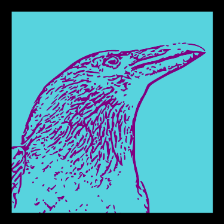

Scryer Prolog Meetup 2026 · Vienna · 24–25 October 2026

Prolog is so awesome.
Why isn’t it widely used?
22 years teaching Prolog · University of Huelva, Spain
José Carpio CañadaProfessor of Computing and Artificial Intelligence
University of Huelva · Spain
Introduction · Who am I?
Context
01Small public university in southern Spain: University of Huelva
02Vocational training in electronics. Fascinated by robotics.
03Studied Software Development at the University of Granada.
04Started teaching Prolog in 2004 — without ever studying it.
05Weak mathematical foundations.
Act I · The beginning
2004.
My first Prolog classroom.
I was learning to teach a language I had never learned as a student.
Act I · The challenge
One semester.
01Prolog and Haskell in the same course.
02Students already thought in imperative languages.
03Very little time to learn a new paradigm.
Act I · My approach
I taught Prolog
as if it were C++.
01Syntax and language features.
02Step-by-step execution.
03Trying to visualise recursion over time.
Act I · The results
80%
of students failed.
Act I · The human cost
3 or 4 years
to pass one course.
Some students kept returning to the same exam, year after year.
Act I · The conversation
“I have passed every other subject.
Only Declarative Programming remains.”
He had been trying for four years. He was desperate.
Act I · The question
Was Prolog only for
a gifted few?
Or was I teaching it the wrong way?
Act II · The turning point
I needed a
different way to think.
The problem was not the students’ intelligence. It might have been my mental model.
Act II · The conversation
“What is the mathematical equivalent of recursion?”
I asked my friend Manuel Maestre, a mathematics professor.
Act II · The answer
Mathematical induction.
One answer changed how I taught recursion.
Act II · A new mental model
Stop imagining
every execution step.
Reason about the smaller problem instead.
Act II · How I teach recursion now
Induction, in 3 moves.
1 Reduce the problem: n → n − 1
2 Assume the smaller case holds.
3 Build the whole from that result.
And define the base case.
Act II · Learning a new paradigm
To learn to surf,
we need time and practice (a lot of practice!)
Learning Prolog also takes time, repetition and a new mental habit.
Act III · The transformation
From control flow
to logical relations.
01The Power of Prolog — Markus Triska.
02Focus on pure relations and CLP.
03Move cut and fail out of the introductory core.
Act III · Practice
36+
exercises per semester.
Teach the way of thinking — then practise it.
Act III · What changed
The outcome in my classroom
≈80%
failed in the early years
90%+
passed over the last decade
My teaching observations — not a controlled experiment.
Act III · My hypothesis
Why isn’t Prolog widely used?
01Learning barrier: a different way of thinking is hard to teach and learn.
02Architecture mismatch: von Neumann machines are built around imperative execution.
Two hypotheses, not established causes.
One open question · Teaching
Could we teach Prolog
so that almost anyone
can learn it?
One open question · Computing
Could we build a machine
better suited to Prolog?
Scryer Prolog Meetup 2026
Thank you.
Questions? Let's discuss!
José Carpio Cañada
Professor of Computing & Artificial Intelligence · University of Huelva
jose.carpio@dti.uhu.es
YouTube: @josecarpioc
GitHub: github.com/jcarpio